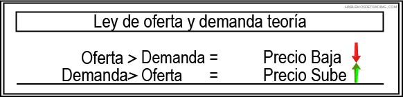
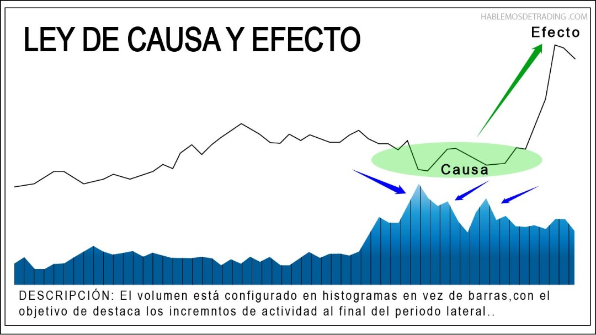
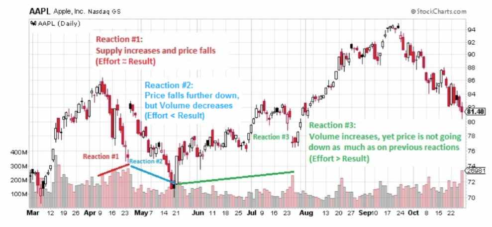

Richard D. Wyckoff
Richard Wyckoff
Richard Demille Wyckoff se convirtió en una celebridad de Wall Street. Fue un adelantado en el mundo de la inversión ya que comenzó como corredor de bolsa a los 15 años y a la edad de 25 ya poseía su propia empresa de Bróker financiero.
El método que desarrolló de análisis técnico y especulación surgió gracias a sus habilidades de observación y comunicación.Al trabajar como Broker, Wyckoff vio el juego de los grandes operadores y comenzó a observar a través de la cinta y de los gráficos las manipulaciones que estos llevaban a cabo y con la que obtenían altos beneficios.
Declaró que era posible juzgar el futuro curso del mercado por sus propias acciones ya que la acción del precio refleja los planes y propósitos de aquellos que lo dominaban.
Wyckoff llevó a cabo sus métodos de inversión consiguiendo una alta rentabilidad. Según pasaba el tiempo crecía su altruismo hasta que redireccionó su atención y pasión a la educación.
Escribió diversos libros así como la publicación de una popular revista de la época “Magazine of Wall Street”.Se sintió obligado a compilar las ideas que había reunido durante sus 40 años de experiencia en Wall Street y ponerlas en conocimiento del público general. Deseaba ofrecer un conjunto de principios y procedimientos sobre lo que se necesita para ganar.
Esas reglas fueron plasmadas en el curso que lanzó en 1931 “The Richard D. Wyckoff Method of Trading and Investing Stocks. A course of Instruction in Stock Market Science and Technique” convirtiéndose en el conocido método Wyckoff..
Richard D. Wyckoff

Richard Demille Wyckoff (2 de noviembre de 1873 - 7 de marzo de 1934) fue una autoridad del mercado de valores , fundador y editor de la Revista deWall Street (fundado en 1907), y editor de Stock Technique.
Referencia
El método Wyckoff
Muchos de los principios básicos de Wyckoff se han convertido en fundamentos básicos del análisis técnico. Las tres leyes fundamentales: Oferta y Demanda, Causa y Efecto y Esfuerzo y Resultado; los conceptos de Acumulación/Distribución y la supremacía del Precio y el Volumen a la hora de determinar los movimientos del precio son algunos ejemplos.
El método Wyckoff ha pasado el test del tiempo. Más de 100 años de continuo desarrollo y uso han probado el valor del método para hacer trading todo tipo de instrumentos financieros.
Este logro no debería sorprender ya que se basa en el análisis de la acción del precio y el volumen para juzgar cómo reacciona a la batalla que tiene lugar entre las auténticas fuerzas que rigen todos los cambios del precio: la oferta y la demanda.
Estructuras metodología Wyckoff
Los mercados financieros son un ente vivo, están en constante cambio debido a su continua interacción entre compradores y vendedores. Es por esto que sería un error utilizar patrones o esquemas fijos para tratar de leer el contexto del mercado.Consciente de que es prácticamente imposible que el precio desarrolle dos estructuras idénticas, el enfoque de trading que propone la metodología Wyckoff es flexible a la hora de analizar el mercado.
El precio puede desarrollar diferentes tipos de estructuras dependiendo de las condiciones en las que se encuentre. Es por esto que se hace necesario un enfoque que le de cierta flexibilidad a los movimientos del precio pero que al mismo tiempo se rija por ciertos elementos fijos que proporcionen la mayor objetividad posible a la lectura.
Estos aspectos fijos de la metodología son los eventos y fases que componen el desarrollo de las estructuras. A continuación presentamos dos esquemas básicos de acumulación y distribución para proporcionar una idea muy general de la dinámica en la que se mueve el precio bajo las premisas de la metodología Wyckoff.
Como bien acabamos de decir, estos esquemas se pueden considerar como los ideales. Lo importante es tener en cuenta que, el mercado no siempre los presentará de esta misma forma.
Fases del Mercado
| Acumulacion | Las manos fuetes le commpran a las manos debiles. |
|---|---|
| Participacion | Las manos debiles compran movidos por las emociones. |
| Distribucion | Las manos fuertes venden las acciones que compraron en la acumulacion. |
La supremacia del precio y el volumen
| El precio | La accion del precio es consecuencia de la accion de la oferta y la demanda. |
|---|---|
| El volumen | Es la interpretacion numerica y a la vez grafica de la suma de la eferta y la demanda. |
El Composite man
Wyckoff propuso un dispositivo heurístico para ayudar a comprender los movimientos de precios en acciones individuales y el mercado en general: "el Hombre Compuesto".
Aconsejó a los comerciantes minoristas que trataran de entender y jugar el juego del mercado como lo hizo el Hombre Compuesto. De hecho, dijo que ni siquiera importa si los movimientos del mercado son reales o artificiales; es decir, el resultado de la compra y venta real por parte del público y de los inversionistas de buena fe o de la compra y venta artificial por parte de operadores más grandes ". (Wyckoff RD (1937). El método de Richard D. Wyckoff de negociación e inversión en acciones Wyckoff Associates; York; Sección 9M, p. 2)
Con base en sus años de observaciones de las actividades de mercado de los grandes operadores, Wyckoff enseñó que:
- El Hombre Compuesto cuidadosamente planea, ejecuta y concluye sus campañas.
- El Hombre Compuesto atrae al público para comprar una acción en la que ya ha acumulado una línea considerable de acciones al realizar muchas transacciones que involucran un gran número de acciones, en efecto, anunciar su acción al crear la apariencia de un "mercado amplio".
- Uno debe estudiar gráficos de acciones individuales con el fin de juzgar el comportamiento de las acciones y los motivos de los grandes operadores que lo dominan .
- Con el estudio y la práctica, uno puede adquirir la capacidad de interpretar los motivos detrás de la acción que representa un gráfico. Wyckoff y sus asociados creían que si uno podía entender el comportamiento del mercado del Hombre Compuesto, uno podía identificar muchas oportunidades de inversión y comercio lo suficientemente pronto como para beneficiarse de ellas .
- ¿Cuál es el motivo del Hombre Compuesto?.
- ¿Qué está haciendo ahora? ¿Acumular, distribuir o dejar que el precio suba / baje?.
- ¿Cómo gana dinero? ¿Quién está perdiendo por las acciones del Hombre Compuesto?.
- Si yo fuera el Hombre Compuesto, ¿cuál sería mi próximo paso?.
Afortunadamente, a pesar de que los movimientos del Hombre Compuesto son sigilosos, dejan huellas en todo el gráfico y nos interesa encontrarlas e interpretarlas correctamente. Pero antes de profundizar en el análisis técnico y los gráficos, debemos comprender los tres principios fundamentales que subyacen a cada movimiento de precios; Las llamadas "Leyes de Wyckoff"
“El mercado está hecho por la mente del hombre, y todas las fluctuaciones del mercado y todas las acciones deben estudiarse como si fueran el resultado de las operaciones de un hombre. Llamémosle El Operador Compuesto, quien, en teoría, se sienta detrás de escena y juega una acción para su ventaja. ":
Las 3 Leyes del mercado
La metodología basada en gráficos de Wyckoff se basa en tres leyes fundamentales, que afectan muchos aspectos del análisis, que incluyen: determinar el sesgo direccional actual y potencial de las acciones individuales del mercado e individual, seleccionar las mejores acciones para negociar largas o cortas, identificar la disposición de una acción para dejar un rango de negociación, y proyectar objetivos de precios en una tendencia del comportamiento de una acción en un rango de negociación. Estas leyes informan el análisis de cada gráfico y la selección de cada acción para negociar.
Las tres leyes fundamentales de Wyckoff son:
-
1.- La ley de la oferta y la demanda determina la dirección del precio. Esta ley gobierna todos los cambios de precio. Cuando la demanda supera a la oferta, los
precios suben, cuando la oferta supera a la demanda, los precios caen.
2.- La ley de causa y efecto proporciona una proyección de la extensión del movimiento futuro. Por cada causa (formación horizontal) deberíamos tener un efecto (movimiento vertical). Su correlación es de UNO-A-UNO entre la causa y el efecto, es decir, que por cada causa hay un efecto.
3.- La ley de esfuerzo versus resultado es la que nos proporciona una alerta del posible cambio de tendencia. Disonancia y divergencia entre el volumen y el precio frecuentemente nos indica un cambio en la dirección en el precio.
“La mayoría de las operaciones importantes en el mercado son preparadas, ejecutadas y llevadas a una conclusión intencional. El Operador Compuesto planifica, ejecuta y concluye cuidadosamente sus campañas.":
Ley de oferta y demanda
La metodología basada en gráficos de Wyckoff se basa en tres "leyes" fundamentales, que afectan muchos aspectos del análisis, que incluyen: determinar el sesgo direccional actual y potencial de las acciones individuales del mercado e individual, seleccionar las mejores acciones para negociar largas o cortas, identificar la disposición de una acción para dejar un rango de negociación, y proyectar objetivos de precios en una tendencia del comportamiento de una acción en un rango de negociación. Estas leyes informan el análisis de cada gráfico y la selección de cada acción para negociar.
Ley de oferta, la demanda y el Volumen
El precio de cualquier bien o servicio (en nuestro caso, activo financiero) será el resultado de la interrelación entre aquellos agentes que ofrecen ese activo (la oferta) y la de aquellos agentes que quieren ese activo (demanda). Cuando la demanda excede a la oferta, el precio del activo tenderá a subir, y cuando la oferta es la que excede a la demanda, el precio tenderá a bajar. Así de sencillo.Esto es justo lo que ocurre cuando el profesional acumula o distribuye: necesitará testear si aún hay oferta o demanda en el contexto porque mientras haya, por ley de oferta y demanda, el precio no podrá subir o caer. El profesional sabe que mientras tenga oposición (oferta o demanda) que ponga en peligro sus intereses, el precio podría darse la vuelta y hacerle perder dinero. Por eso necesita estar seguro de que ya no tiene ninguna presión contraria que impida el movimiento de los precios a su favor.
En términos generales, cuando el rango del precio se ensancha con respecto a la barra precedente y realiza un máximo mayor con volumen creciente, diremos que la demanda está entrando a mercado superando a la oferta. Esta acción provocará un movimiento alcista. Si vemos la misma situación pero con el volumen en descenso, el avance del precio será el resultado de la falta de oferta con respecto a la demanda. En ambas situaciones estamos ante un escenario alcista.
Si el rango del precio se estrecha a medida que el precio asciende con poco volumen, ello nos sugiere que la demanda no tiene fuerza. Si ese estrechamiento se combina con volumen creciente, esto nos indica que la oferta está entrando a mercado y que supera a la demanda. Ambas situaciones son propias de escenarios bajistas.
En ocasiones el precio arranca alcista con un amplio rango pero termina cerrando en la mitad de la barra, o incluso en los mínimos. Lo mismo podemos decir cuando una barra bajista de rango amplio cierra en la mitad, o incluso en los máximos. Ambas situaciones nos indican que, en el último momento, apareció presión contraria, y se puso en peligro el avance del precio.
En ocasiones, interpretar un fallo con una sola barra aislada es un error. En la medida de lo posible, debemos ponerla en contexto para valorar si efectivamente es fruto de un cambio en el carácter del activo, o si es sólo una excepción dentro de un proceso de continuidad en la dirección del mercado. Si tenemos dudas, podemos valorar esa barra en dimensiones inferiores para observar en detalle si se produce el fallo por un proceso de acumulación o distribución de grado menor.
En términos generales, en un rango lateral el precio se moverá para arriba o abajo con rangos y se ampliará y estrechará de forma alternativa, al igual que el volumen, sin que se aprecie ninguna tendencia clara. Conocer el carácter y el contexto del activo es especialmente crítico cuando estamos en posiciones primarias de trading, ya que serán las zonas donde buscaremos operaciones.
Ley de oferta y demanda

Si la oferta es mayor que la demanda, los precios bajan. Si la demanda es mayor que la oferta, los precios suben.
Formula alcista del mercado

Si el volumen sube, y el precio sube, es porque hay aumento de demanda. Si el volumen baja, y el precio sube, es porque hay ausencia de oferta.
Formula bajista del mercado

Si el volumen sube, y el baja baja, es porque hay aumento de oferta. Si el volumen baja, y el baja baja, es porque hay ausencia de demanda.
Ley de causa y efecto
Wyckoff observó que todo desplazamiento del precio tiene un origen concreto que lo provoca. O dicho de otro modo, todo “efecto” tiene su “causa”. Es decir, ningún movimiento del mercado es aleatorio, sino que es fruto de las maniobras provocadas por los profesionales, que, con sus procesos de acumulación y distribución, provocan los movimientos de los precios.
Cuanto más intensos sean estos procesos de acumulación o distribución (causas), más potente será el resultado posterior (efecto) (ver Figura 5). Para plantear el posible recorrido, fruto de esos procesos, más adelante estudiaremos cuatro métodos diferentes de objetivos de recorrido, con los gráficos de punto y figura y los gráficos de barras.
Ley de causa y efecto

La magnitud de un movimiento previo del precio, es proporcional a su movimiento posterior
Ley de efuerzo y resultado
La tercera ley de Wyckoff (Esfuerzo versus resultado), implica la identificación de convergencias y divergencias de precio-volumen para anticipar puntos de inflexión potenciales en las tendencias de precios. Por ejemplo, cuando el volumen (Esfuerzo) y el precio (Resultado) aumentan sustancialmente, están en armonía, lo que sugiere que la demanda probablemente continuará impulsando el precio al alza. En algunos casos, sin embargo, el volumen puede aumentar e incluso aumentar sustancialmente, pero el precio no sigue, produciendo solo un cambio marginal al cierre. Si observamos este comportamiento de precio-volumen en una reacción al soporte en un rango de negociación de acumulación, esto indica la absorción de la oferta por parte de grandes intereses, y se considera alcista.
Del mismo modo, un gran volumen en un rally con un avance de precio mínimo en un rango de comercio de distribución demuestra una acción, incapacidad para subir debido a la presencia de una oferta importante, también de grandes instituciones. Varias reacciones en el cuadro de la accion "AAPL" a continuación ilustran la Ley de Esfuerzo versus Resultado.
En este gráfico de AAPL, podemos observar el principio de Esfuerzo versus Resultado en tres reacciones de precios. En la primera, vemos que los precios caen en una serie de barras de gran distribución y que aumenta el volumen. Esto sugiere una armonía entre el volumen (Esfuerzo) y la disminución del precio (Resultado). En la segunda reacción, el precio disminuye en una cantidad similar a la Reacción # 1, pero en diferenciales más pequeños y menor volumen, lo que indica una oferta reducida, lo que a su vez sugiere el potencial de al menos un incremento a corto plazo. En la Reacción # 3, el tamaño del swing disminuye, pero el volumen aumenta. En otras palabras, el Esfuerzo aumenta mientras que el Resultado disminuye, mostrando la presencia de grandes compradores que absorben la oferta en previsión de una continuación del rally.
Grafico de barras de las acciones de la empresa Apple

Reaccion 1: Aumenta la oferta y baja el precio. Esfuerzo = resultado. Reaccion 2: El precio cae más abajo y el volumen disminuye con respecto al de la reaccion anterior. Esfuerzo < resultado. Reaccion 3: El volumen aumenta, el precio no baja tanto como en la reacción anterior. Esfuerzo > resultado.
Ciclos del mercado
Según Wyckoff, el mercado puede entenderse y anticiparse a través de un análisis detallado de la oferta y la demanda, que se puede determinar estudiando la acción del precio, el volumen y el tiempo. Como corredor, estaba en posición de observar las actividades de individuos y grupos altamente exitosos que dominaban temas específicos y podía descifrar, mediante el uso de lo que él llamó vertical (barra) y figura (punto y figura) Cartas, las intenciones futuras de esos grandes intereses. En la figura a continuación se muestra un esquema idealizado de cómo conceptualizó la preparación y ejecución de los grandes intereses para los mercados alcistas y bajistas. El tiempo para ingresar pedidos largos es hacia el final de la preparación para un margen de precios o mercado alcista (acumulación de grandes líneas de acciones), mientras que el tiempo para iniciar posiciones cortas se encuentra al final de la preparación para el margen de precios.
Cuáles son las diferentes fases del ciclo según Wyckoff?.
En el gráfico de la derecha, se pueden ver las diferentes fases de un ciclo del mercado. En ella podemos ver cuando llevan en control los compradores, cuando pierden fuerza y cuando toman el control los vendedores. También podemos ver, que hacen las manos fuertes del mercado en las zonas o fases de consolidación.
El grafico muestra las siguientes fases:
Fase de Acumulación — El dinero profesional o manos fuertes del mercado ven que los precios son bajos y acumulan sus posiciones de compras en dicho rango. El mercado, por lo general, hará que los precios se muevan en lateral durante un período prolongado de tiempo haciendo que la mayoría de los traders retail se desgasten en su paciencia y en su capital y es en esos momentos cuando los profesionales van comprando todo lo que los pequeños inversores van soltando, por lo que el volumen de contratación se hace “constante” y suele ser “alto”.
Fase de Mark Up — En esta fase, el precio del activo subyacente comienza a subir debido al proceso de acumulación anterior. En esta fase los profesionales, “el dinero inteligente”, dejan que el mercado haga su trabajo provocando las subidas de precio y se incremente el interés de los pequeños inversores por entrar en dicho mercado para no perderse la subida que se espera. En ocasiones, incluso, el profesional realiza reacumulaciones dando inicialmente, apariencia de haber llegado a un proceso de distribución, que son los procesos con los que se culminan los ciclos alcistas.
Fase de Distribución — Aquí, el profesional piensa que el activo ha llegado a un punto de sobrevaloración y que se ha sobredimensionado el precio por lo que comienza a distribuir sus participaciones que adquirió en la fase de acumulación. Esto hace que el precio se frene para incentivar al resto de compradores a entrar al mercado, para no perderse la “fiesta” y así dar la contrapartida a los profesionales que realmente tienen la intención de dejar el mercado por el lado alcista.
Fase de Mark Down — Una vez que el dinero inteligente deja su papel a los compradores rezagados, estos quedan atrapados por que el precio comienza a caer, ya que las manos fuertes no quieren el activo a esos precios tan elevados, y “ellos” van a tener la paciencia y el dinero suficiente para que cuando el precio comience a estar a niveles “baratos” volver a comprar, pensemos en el idílico termino que cualquiera quiere en la vida, adquirir un bien o activo “barato para venderlo caro”.
Entre estas cuatro fases que R. Wyckoff nos marca, tenemos también unas intermedias. Estas son:
Fase de reacumulación — Esta fase tiene lugar cuando los mercados se detienen en su subida, estos es debido a que los compradores, ansiosos, toman sus beneficios de forma anticipada. Esta es una zona donde el profesional aprovecha para dar la contrapartida a los traders que salen precipitadamente de la tendencia y que para ellos es el proceso de re acumular con el fin de obtener mayores beneficios en la zona alta de la tendencia.
Fase de redistribución — Esta es la fase en la que los bajistas, ansiosos de tomar beneficios, cierran sus cortos mientras que otros traders no desean perderse el movimiento y van tomando operaciones bajistas conforme va “cayendo el cuchillo” hasta que se cortan las manos.
Rango de trading
En la practica, las zonas de acumulacion y distribucion, son lugares donde la tendencia anterior (hacia arriba o hacia abajo) se ha detenido y existe un equilibrio relativo entre la oferta y la demanda, a ella tambien se le conoce como rangos de trading (TR), Las instituciones y otros grandes intereses profesionales se preparan para su próxima campaña alcista (o bajista) a medida que acumulan (o distribuyen) acciones dentro del TR. Tanto en la TR como en la distribución, el Hombre Compuesto está comprando y vendiendo activamente, con la distinción de que, en la acumulación, las acciones compradas superan a las vendidas, mientras que en la distribución ocurre lo contrario. La extensión de la acumulación o distribución determina la causa que se desarrolla en el movimiento subsiguiente fuera de la TR.
Un analista de Wyckoff exitoso debe ser capaz de anticipar y juzgar correctamente la dirección y la magnitud del movimiento fuera de un TR. Afortunadamente, Wyckoff ofrece pautas comprobadas por el tiempo para identificar y delinear las fases y los eventos dentro de un TR, que a su vez proporcionan la base para estimar los objetivos de precios en la tendencia posterior. Estos conceptos se ilustran en los siguientes cuatro esquemas; dos que representan variantes comunes de TR de acumulación, seguidas de dos ejemplos de TR de distribución.
Ciclo del mercado

Fases del mercado

Rango de trading

Fase de acumulacion
La fase de acumulación es aquel proceso por el cual los profesionales (las manos fuertes) le compran, poco a poco, a las manos débiles tantos activos como les sea posible hasta que la oferta desaparece por completo. Será entonces y no antes cuando, al no haber resistencia que dificulte el ascenso, los precios subirán, dando lugar a una fase alcista de mercado.

FASE DE ACUMULACION "A"
La fase A marca la detención de la tendencia bajista anterior. Hasta este punto, la oferta ha sido dominante. La disminución de la oferta que se aproxima se evidencia en el soporte preliminar (PS) y el clímax de ventas (SC). Estos eventos a menudo son muy evidentes en los gráficos de barras, donde la expansión y el gran volumen representan la transferencia de un gran número de acciones del público a grandes intereses profesionales. Una vez que se han aliviado estas intensas presiones de venta, generalmente se produce un rally automático (AR), que consiste tanto en la demanda institucional de acciones como en la cobertura corta. Una prueba secundaria (ST) exitosa en el área del SC mostrará menos ventas que anteriormente y una reducción del volumen de distribución y la disminución, por lo general se detiene en o por encima del mismo nivel de precios que el SC. Si el ST va más bajo que el del SC, se pueden anticipar nuevos mínimos o una consolidación prolongada. Los mínimos del SC y del ST y el máximo del AR establecen los límites del TR. Se pueden dibujar líneas horizontales para ayudar a centrar la atención en el comportamiento del mercado, como en los dos Esquemas de acumulación, arriba.A veces, la tendencia bajista puede terminar de forma menos dramática, sin una acción de precio y volumen. En general, sin embargo, es preferible ver el PS, SC, AR y ST, ya que estos proporcionan no solo un panorama de gráficos más distinto, sino también una clara indicación de que los grandes operadores han iniciado la acumulación de forma definitiva.
En una TR acumulativa (que ocurre durante una tendencia alcista a más largo plazo), los puntos que representan PS, SC y ST no son evidentes en la Fase A.
Más bien, en tales casos, la Fase A durante la re-acumulación se parece a la que se observa más típicamente en la distribución (ver más abajo). Las fases B - E en los TR de re-acumulación son similares a, pero generalmente tienen una duración más corta y una amplitud más pequeña que aquellas en la base de acumulación primaria.
PS: Preliminary support (soporte preliminar)
PS: soporte preliminar, donde la compra sustancial comienza a proporcionar un soporte pronunciado después de un movimiento hacia abajo prolongado. El volumen aumenta y el diferencial de precios se amplía, lo que indica que el movimiento descendente puede estar llegando a su fin.SC: selling climax (El clímax de ventas)
SC: El clímax de ventas, el punto en el que el aumento de la propagación y la presión de venta por lo general es un clímax y las ventas intensas o de pánico por parte del público están siendo absorbidas por intereses profesionales más importantes en o cerca del fondo. A menudo, el precio cerrará bien la baja en un SC, lo que refleja la compra de estos grandes intereses.AR—automatic rally, (Rally automático)
AR: Rally automático, se produce porque la intensa presión de venta ha disminuido considerablemente. Una ola de compras hace subir los precios fácilmente; esto es alimentado por la cobertura corta. El máximo de este rally ayudará a definir el límite superior de una acumulación TR.ST—Secondary test, (Prueba secundaria)
ST: Prueba secundaria, en la que el precio revisa el área del SC para probar el equilibrio entre la oferta y la demanda en estos niveles. Si se confirma un mínimo, el volumen y la distribución de precios deberían disminuir significativamente a medida que el mercado se aproxime al soporte en el área del SC. Es común tener múltiples ST después de un SC.
FASE DE ACUMULACION "B"
En el análisis de Wyckoff, la fase B cumple la función de "construir una causa" para una nueva tendencia alcista (consulte la Ley de Wyckoff N. ° 2 - "Causa y efecto"). En la fase B, las instituciones y los grandes intereses profesionales están acumulando inventarios de precios relativamente bajos en anticipación del próximo margen de beneficio. El proceso de acumulación institucional puede llevar mucho tiempo (a veces un año o más), e implica comprar acciones a precios más bajos y verificar los avances en los precios con ventas cortas. Por lo general, existen múltiples ST durante la Fase B, así como acciones de tipo empuje hacia arriba en el extremo superior de la TR. En general, los grandes intereses son compradores netos de acciones a medida que la TR evoluciona, con el objetivo de adquirir la mayor cantidad posible de la oferta flotante restante. La compra y venta institucional imparte la acción característica del precio de subida y bajada del rango de negociación. Al principio de la Fase B, los cambios de precios tienden a ser amplios, acompañados por un alto volumen. Sin embargo, a medida que los profesionales absorben la oferta, el volumen de las caídas hacia abajo dentro de la TR tiende a disminuir. Cuando parece que es probable que se haya agotado el suministro, el stock está listo para la Fase C.ST—Secondary test en fase B, (Prueba secundaria)
ST: Prueba secundaria en la fase B, en la que el precio revisa el área del SC para probar el equilibrio entre la oferta y la demanda en estos niveles. Si se confirma un mínimo, el volumen y la distribución de precios deberían disminuir significativamente a medida que el mercado se aproxime al soporte en el área del SC. Es común tener múltiples ST después de la fase A.
FASE DE ACUMULACION "C"
En la fase C que el precio de las acciones proporciona una prueba decisiva de la oferta restante, lo que permite a los operadores de "dinero inteligente" determinar si las acciones están listas para ser marcadas. Como se señaló anteriormente, un resorte es un movimiento del precio por debajo del nivel de soporte del TR establecido en las fases A y B que se invierte rápidamente y se regresa al TR. Es un ejemplo de una trampa para osos porque la caída debajo del soporte parece indicar la reanudación de la tendencia bajista. Sin embargo, en realidad, esto marca el comienzo de una nueva tendencia alcista, que atrapa a los últimos vendedores o osos. En el método de Wyckoff, una prueba de suministro exitosa representada por un resorte (o una reorganización) proporciona una oportunidad comercial de alta probabilidad. Un resorte de bajo volumen (o una prueba de bajo volumen de una sacudida) indica que es probable que el stock esté listo para subir, por lo que este es un buen momento para iniciar al menos una posición larga parcial.La aparición de un signo de fortaleza (SOS) poco después de un resorte (Spring) o sacudida valida el análisis. Sin embargo, como se señala en el Esquema de acumulación Nº 2, la prueba de suministro puede ocurrir más arriba en la TR sin un resorte o sacudida; cuando esto ocurre, la identificación de la fase C puede ser desafiante.
Nota: Los Springs (resortes) o las shakeouts (sacudidas) generalmente ocurren tarde dentro de un TR (RANGO DE TRADING) y permiten a los jugadores dominantes de la acción realizar una prueba definitiva del suministro disponible antes de que se desarrolle una campaña de recargo.
Un “Springs” toma el precio por debajo del mínimo del TR y luego se invierte para cerrarse dentro del TR; esta acción permite a grandes intereses engañar al público sobre la dirección de la tendencia futura y adquirir acciones adicionales a precios de ganga.
Una sacudida (shakeouts) termina al final de una acumulación TR es como un resorte (SPRING) con esteroides. Los cambios bruscos también pueden ocurrir una vez que ha comenzado el avance de los precios, con un rápido movimiento a la baja con la intención de inducir a los comerciantes minoristas e inversores en posiciones largas a vender sus acciones a grandes operadores. Sin embargo, los resortes y los elementos terminales no son elementos obligatorios: el Esquema de acumulación 1 muestra un resorte, mientras que el Esquema de acumulación 2 muestra una TR sin resorte.
Esquema #1 fase de acumulacion

Esquema #2 fase de acumulacion

FASE DE ACUMULACION "D"
Si nuestro análisis es correcto, lo que debería seguir es el predominio consistente de la demanda sobre la oferta. Esto se evidencia por un patrón de avances signo de fortaleza (SOS) en la ampliación de los diferenciales de precios y el aumento del volumen, y las reacciones último punto de soporte (LPS) en los diferenciales más pequeños y volúmenes disminuidos. Durante la Fase D, el precio se moverá al menos a la parte superior de la TR. Los LPS en esta fase son generalmente lugares excelentes para iniciar o agregar posiciones largas y rentables.LPS—last point of support— (último punto de soporte)
LPS: el punto bajo de una reacción o retroceso después de un SOS. Realizar una copia de seguridad de un LPS significa un retroceso al soporte que antes era resistencia, en una menor expansión y volumen. En algunos gráficos, puede haber más de un LPS, a pesar de la precisión aparentemente singular de este término.BU—”back-up”.— (Copia de seguridad)
BU: Este término es short-hand para una metáfora colorida acuñada por Robert Evans, uno de los principales maestros del método de Wyckoff desde la década de 1930 hasta la década de 1960. Evans comparó el SOS con un "salto a través del arroyo" de resistencia de precios, y el "respaldo al arroyo" representó tanto la toma de ganancias a corto plazo como una prueba de suministro adicional alrededor del área de resistencia. Una copia de seguridad es un elemento estructural común que precede a un margen de precios más sustancial, y puede adoptar una variedad de formas, incluyendo un simple retroceso o una nueva TR en un nivel superior.SOS—sign of strength— (Signo de fortaleza)
SOS: Signo de fortaleza, un avance en el precio al aumentar la distribución y un volumen relativamente más alto. A menudo, se realiza un SOS después de un resorte, que valida la interpretación del analista de esa acción previa.
FASE DE ACUMULACION "E"
En la fase E, las acciones abandonan el TR, la demanda está en control total y el margen de beneficio es obvio para todos. Los contratiempos, como las sacudidas y las reacciones más típicas, suelen ser de corta duración. En cualquier punto de la fase E pueden ocurrir nuevos TR de nivel superior que comprenden tanto la obtención de beneficios como la adquisición de acciones adicionales ("reacumulación") por parte de grandes operadores. Estos TRs a veces se denominan "escalones" en el camino hacia objetivos de precios aún más altos.
Fase de Distribucion
La fase de distribución es el proceso por el cual las manos fuertes venderán, poco a poco, sus activos hacia las manos débiles hasta que ya no quede nadie dispuesto a seguir comprando y los precios caigan por falta de demanda.

FASE DE DISTRIBUCION "A"
Partimos de un mercado en tendencia alcista. En las primeras etapas de esta fase, la demanda aún tiene el control del mercado. Pero llega un momento en el que el precio estará a un nivel lo suficientemente alto como para atraer el interés del dinero profesional que empezará a vender títulos, poco a poco, y dará comienzo al proceso de distribución que ya conocemos.
La Fase A marca la detención de la tendencia alcista anterior. Hasta este punto, la demanda ha sido dominante y la primera evidencia significativa de la oferta que ingresa al mercado es la oferta preliminar (PSY) y el clímax de compra (BC). Estos eventos generalmente son seguidos por una reacción automática (AR) y luego una prueba secundaria (ST) del BC, a menudo con un volumen disminuido. Sin embargo, la tendencia alcista también puede terminar sin una acción climática, en lugar de demostrar el agotamiento de la demanda con un margen y un volumen decrecientes, y con un progreso menor hacia arriba en cada incremento antes de que surja una oferta significativa.
En una redistribución de TR dentro de una tendencia bajista más grande, la fase A puede parecerse más al inicio de una acumulación de TR (por ejemplo, con el precio climático y la acción de volumen a la baja). Sin embargo, las fases B a E de una redistribución TR pueden analizarse de manera similar a la distribución TR en la parte superior del mercado.
PSY—preliminary supply (Suministro preliminar)
PSY: Suministro preliminar, donde grandes intereses comienzan a descargar acciones en cantidad después de un pronunciado movimiento ascendente. El volumen se expande y el diferencial de precios se amplía, lo que indica que un cambio en la tendencia podría estar llegando.BC—Buying climax (Clímax de compras)
BC: El clímax de compras, durante el cual a menudo hay incrementos marcados en el volumen y la distribución de precios. La fuerza de compra alcanza un clímax, y la compra pesada o urgente por parte del público está siendo llenada por Intereses profesionales a precios cercanos a un top. Un BC a menudo ocurre coincidiendo con un gran informe de ganancias u otras buenas noticias, ya que los grandes operadores requieren una gran demanda del público para vender sus acciones sin deprimir el precio de las acciones.AR—automatic reaction, (Reacción automática)
AR: Reacción automática. Con la compra intensa disminuida sustancialmente después de que el BC y la oferta pesada continuaron, se lleva a cabo un AR. El mínimo de esta liquidación ayuda a definir el límite inferior de la distribución TR.
FASE DE DISTRIBUCION "B"
La función de la fase B es construir una causa en preparación para una nueva tendencia bajista. Durante este tiempo, las instituciones y los grandes intereses profesionales están eliminando su largo inventario e iniciando posiciones cortas antes de la próxima reducción. Los puntos sobre la fase B en la distribución son similares a los realizados para la fase B en la acumulación, excepto que los grandes intereses son vendedores netos de acciones a medida que evoluciona la TR, con el objetivo de agotar la mayor cantidad posible de la demanda restante. Este proceso deja pistas de que el equilibrio entre oferta y demanda se ha inclinado hacia la oferta en lugar de la demanda. Por ejemplo, los Signo de debilidad (SOW) suelen ir acompañados de un aumento y un volumen significativamente mayores a la baja.
AST—Secondary test, (Prueba secundaria)
ST: Prueba secundaria, en la que el precio revisa el área de la Buying climax BC, para probar el equilibrio entre la demanda y la oferta en estos niveles de precios. Si se confirma un tope, la oferta superará la demanda, y el volumen y la distribución deberían disminuir a medida que el precio se aproxime al área de resistencia del BC. Un ST puede tomar la forma de un empuje hacia arriba (UT), en el que el precio se mueve por encima de la resistencia representada por el BC y posiblemente otros ST, y luego se invierte rápidamente para cerrar por debajo de la resistencia. Después de un UT, el precio a menudo comprueba el límite inferior de la TR..SOW—sign of weakness, (Signo de debilidad)
SOW: Signo de debilidad, observable como movimiento hacia abajo (o ligeramente más allá) del límite inferior de la TR, que generalmente se presenta al aumentar la extensión y el volumen. La AR y la (s) SOW (s) inicial (es) indican un cambio de carácter en la acción del precio del stock: la oferta ahora es dominante.
FASE DE DISTRIBUCION "C"
La fase C puede revelarse a través de un empuje hacia arriba (UT) o unb <>empuje hacia arriba después de la distribución (UTAD). Como se señaló anteriormente, una UT es lo opuesto a un resorte (spring). Es un movimiento de precio por encima de la resistencia de TR que rápidamente se invierte y se cierra en el TR. Esta es una prueba de la demanda restante. También es una trampa de toros: parece indicar la reanudación de la tendencia alcista, pero en realidad está destinado a los operadores de ruptura desinformados y mal informados.
Una UT o UTAD permite que grandes intereses engañen al público sobre la dirección de la tendencia futura y vendan acciones adicionales a precios elevados a dichos inversores antes de que comience la reducción. Además, una UTAD puede inducir a los comerciantes más pequeños en posiciones cortas a cubrir y entregar sus acciones a los intereses más grandes que han diseñado este movimiento. Los comerciantes agresivos pueden desear iniciar posiciones cortas después de un UT o UTAD. La relación riesgo / recompensa suele ser bastante favorable. Sin embargo, el "dinero inteligente" detiene repetidamente a los comerciantes que inician posiciones tan cortas con un UT tras otro, por lo que a menudo es más seguro esperar hasta la fase D y un last point of supply, (último punto de suministro) LPSY. A menudo, la demanda es tan débil en una distribución TR que el precio no alcanza el nivel de BC o ST inicial. En este caso, la prueba de demanda de la fase C puede representarse por un UT de un máximo más bajo dentro de la TR.
UTAD—upthrust after distribution.— (empuje hacia arriba después de la distribución)
UTAD: Empuje hacia arriba después de la distribución. Un UTAD es la contraparte distributiva del movimiento de resorte (spring) y terminal en la acumulación TR. Ocurre en las últimas etapas de la TR y proporciona una prueba definitiva de la nueva demanda después de una ruptura por encima de la resistencia de la TR. Análogo a los resortes y sacudidas, un UTAD no es un elemento estructural requerido: el TR en el Esquema de Distribución # 1 contiene un UTAD, mientras que el TR en el Esquema de Distribución # 2 no lo hace.Esquema #1 fase de distribucion

Esquema #2 fase de distribucion

FASE DE DISTRIBUCION "D"
la Fase D llega después de que las pruebas en la fase C nos muestran los últimos jadeos de la demanda. Durante la fase D, el precio viaja hacia el soporte de TR. La evidencia de que el suministro es claramente dominante aumenta ya sea con una clara ruptura de soporte o con una disminución por debajo del punto medio de la TR después de una UT o UTAD. A menudo hay múltiples concentraciones débiles dentro de la fase D; estos LPSY representan excelentes oportunidades para iniciar o agregar posiciones cortas rentables. Cualquier persona que todavía esté en una posición larga durante la fase D está pidiendo problemas.
LPSY—last point of supply, (último punto de suministro)
LPSY: Ultimo punto de suministro. Después de probar el soporte en una SOW, un débil repunte en una extensión estrecha muestra que el mercado está teniendo dificultades considerables para avanzar. Esta incapacidad para recuperarse puede deberse a una demanda débil, a una oferta sustancial o a ambos. Los LPSY representan el agotamiento de la demanda y las últimas oleadas de la distribución de grandes operadores antes de que comience el descuento en serio.
FASE DE DISTRIBUCION "E"
La Fase E representa el desarrollo de la tendencia bajista; La acción sale de la TR y la oferta está en control. Una vez que se rompe el soporte de TR en una SOW importante, este desglose se prueba a menudo con un incremento que falla en o cerca del soporte. Esto también representa una alta probabilidad de vender a corto. Los mítines posteriores durante el descuento son usualmente débiles. Los comerciantes que han tomado posiciones cortas pueden rastrear sus paradas a medida que el precio disminuye. Después de un movimiento significativo hacia abajo, la acción climática puede indicar el comienzo de una redistribución TR o de acumulación.